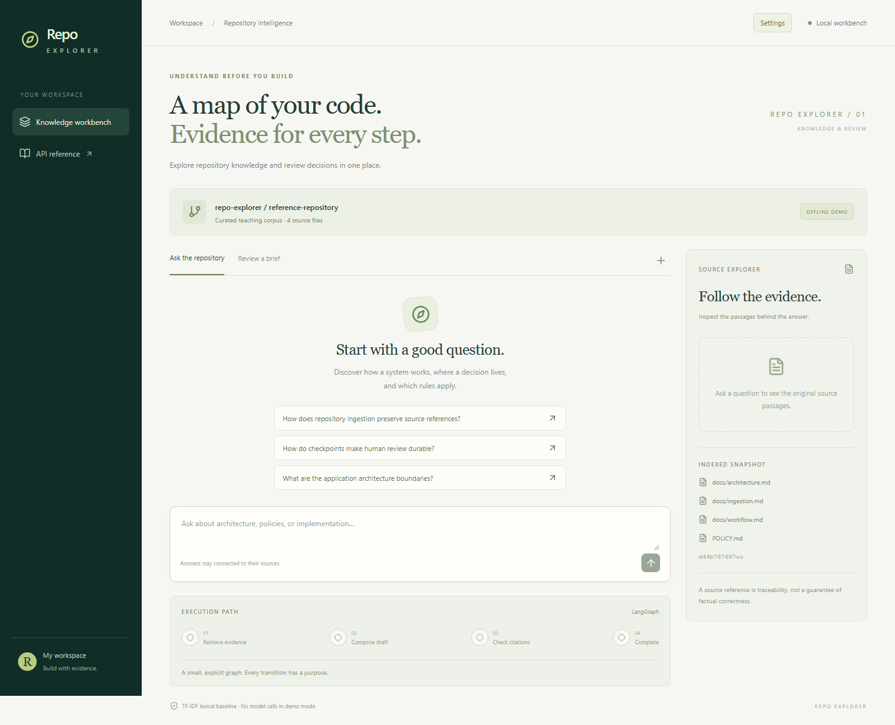

AI engineering with Repo Explorer
Five chapters explain the work of an AI engineer through a repository assistant: selecting evidence with RAG, connecting models with LangChain, controlling execution with LangGraph, and examining the answers in a working interface.

Chapters one through four use offline demo screenshots. Chapter five includes actual Codex-backed responses. The retrieval chapter also records local learned-embedding experiments on authored examples and pinned public package code. Broader evaluation and independent review remain open; this series is an unpublished draft.
Follow a concrete question through the decisions about evidence, models, workflow, and evaluation; see where RAG, LangChain, and LangGraph fit.
Compare lexical and local learned retrieval on pinned code, inspecting recovered evidence, ambiguity, and failures.
Use LangGraph interrupts and SQLite checkpoints to represent a durable human-review decision.
Design a source explorer, workflow trace, and responsive reading surface around observable application behavior.
Inspect real model responses, trace incomplete explanations to their evidence, and use observed failures to guide the next engineering decision.